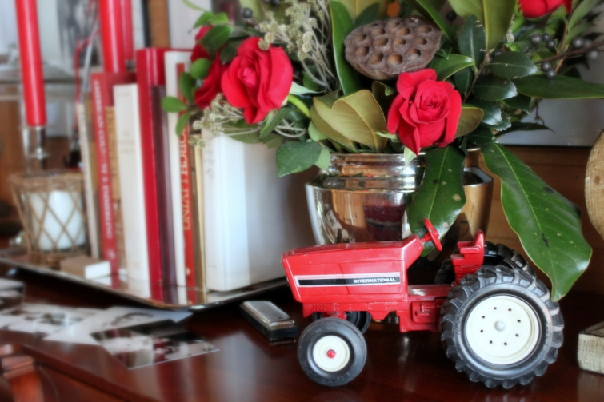
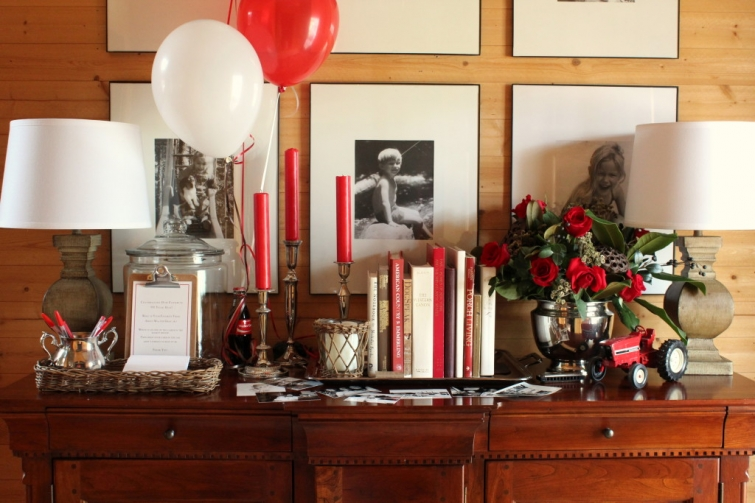
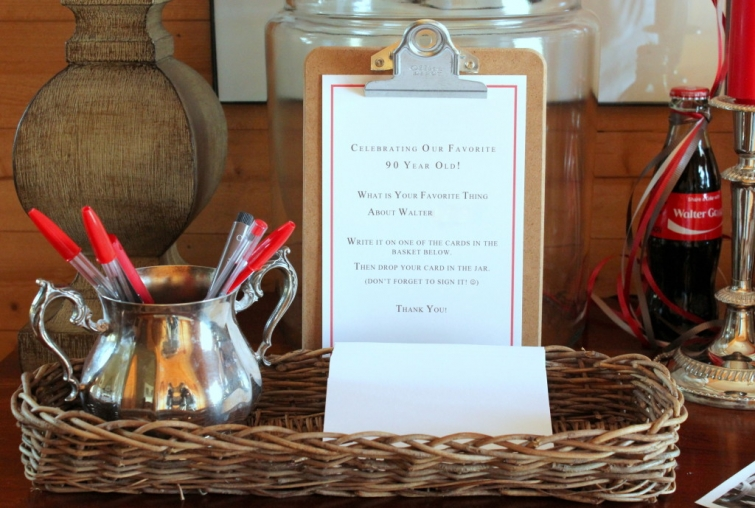

.png)
.PNG)
.PNG)
.PNG)
.PNG)
.PNG)
.JPG)
.JPG)
.PNG)
.PNG)


About 2 weeks ago, we were at a birthday party for one of our nephews, and my sister-in-law whispered to me that we should be planning something special for our father-in-law’s upcoming 90th birthday. To be honest, I had no idea he was turning 90. I thought he was in his mid-eighties, but I totally agreed that 90 deserved a BIG party. So I began to look for ideas for this party and a place to host it. Keep in mind this is the man who has farmed for his entire life and was in and out of the hospital for most of the past year.

I know you don’t have to have a theme for a party, but it certainly makes it easier to make choices when you have a specific direction. After a bit of looking, (and ruling out a LOT of ideas) I came across several “Favorite Things” parties, and the idea seemed perfect for the occasion. So I made a list of about 30 favorite things questions – everything from favorite song to favorite car to favorite sandwich – and my husband interviewed his dad to get the answers.

We set the date for Sunday afternoon, and after we knew we could get him up the 5 front porch steps, we decided to host it here. His dad knew I was going to make “something” with all his favorites (obviously from all the questions 🙂 ) and he knew we were going to have a birthday party here with the immediate family members. What we didn’t tell him (nor his wife because we were afraid she would spill the beans) was that we were also inviting a number of extended family members and about 25 of his friends for this party too.
When he told my husband that his favorite color was brown, I thought…No way! and I said, Then why in the world do you always buy red trucks?? His reply was, Well okay. I like brown for clothes and red for trucks. So the color scheme for the party became brown and red, and it was used on all the paper goods and flower arrangements I made for the event.

I am not really a big fan of roses, but I needed red flowers. Tulips and roses were the only red ones available here, and tulips seemed too much like springtime to me. So roses had to be the choice.
We also wanted to include old photos so family members dropped off snapshots of him that they had. Our daughter and her boyfriend copied them all for me in black and white, and our daughter made a giant collage in the shape of a 90 on the family room mirror. (And yes, I took out all the “snow decor” that was in most of the house, but it will be back. 🙂 )
I wanted to showcase lists of his favorite things, and clipboards from Office Depot worked out to be a great way to display them and other signs. I did create one large one (that only looked like a clipboard) from plywood wrapped in craft paper with an aluminum foil wrapped cardboard “clip.”
We swapped out the small table in the family room for the large one in the dining room so that the guest of honor could be near the serving table. The menu was simple to come up with. It was all of my father-in-law’s favorites. 🙂 (And boy is he a chocoholic!)
Because his favorites included 2 chocolate cakes and strawberry shortcake, we ended up with 3 cakes for the event. My sister-in-law purchased a 14 layer cake from our local bakery…
and I made a German Chocolate cake and a cream cheese pound cake (for the strawberry shortcake.)
We also served his favorite candies, cookies, fruits, nuts (roasted pecans prepared by my sister-in-law), cheese wafers (prepared by my mother) and sandwiches (which our daughter’s boyfriend helped me make.)
A hot chocolate bar was set up on the back porch, and his favorite cold drinks (chocolate milk and Orange Crush) and ice creams (strawberry and black walnut) were set up in the dining room. We also had peanuts to pour into the Cokes as an added treat from his youth.
My brother’s wife had given me this box of personalized Coke bottles for my birthday back in August. She ordered them directly from Coca-Cola.
I thought it was such a clever and sweet idea that I ordered some for my father-in-law’s party…a number of them with his full name (sorry, I edited out his last name for privacy reasons) and some with “a 90 year old.”
At 3:00 the guest of honor, his wife, and the guests began to arrive…
All 56 guests came to wish the guest of honor Happy Birthday. 🙂
Here’s my sister (who happens to be his home health nurse) giving him a gift of “vitamins” (actually a jar full of chocolate candy. 🙂 )
And here is our very helpful niece with her precious daughter entertaining the birthday boy.
My father-in-law and everyone else seemed to enjoy the party, and a large number of them even stayed long after the end of the 3-5 drop in time. (That’s a sign of a good party to me. 🙂 )
Before each guest left, I tried to make sure they stopped by our old piano to pick up their little “goodie bag.”
Remember in my last post about our kitchen, I said I was baking 18 dozen cookies?
Well… it ended up being 20 dozen.
I’ve got that Toll House cookie recipe memorized now. 🙂
Oh, and for some crazy reason you all said you would like to see the messy kitchen when I was baking those cookies, so at your request, here it is (cookie baking, list making, peaches in window, and all. 🙂 )
I ran out of both waxed paper and parchment and had to resort to using plastic wrap on the counter. 🙁
So now you have seen the messy kitchen. 🙂
And that, my dear friends, was our Favorite Things Sort-of-Surprise Birthday Party for my 90 year old father-in-law. I think we accomplished a lot for having only 2 weeks to pull it off. Don’t you?
Before I leave you all today, I have to say thank you to some people. There is no way I could have possibly done all of this without their help…
- My husband for all his work in the yard and going with me to shop for everything we needed (and contacting folks to invite.)
- My mother for baking a zillion cheese crisp wafers, washing a zillion strawberries, dishing up ice cream, and doing anything else she could to help.
- My sister-in-law for her idea that started it all, for taking care of that cake that neither of us could bake, and for preparing all those pecans.
- My niece Ashley, for repeatedly offering any help she could provide (even if she does live in South Carolina!) and taking care of all the balloons around here.
- My daughter and her boyfriend who helped me prepare the food and house, and even fetched a runaway balloon down from our two story family room ceiling! (Sean, you are so smart. 🙂 )
It is always always a group effort around here. And I thank you for allowing me to share our home, our food, our events, and our life with you in the posts. Thank you for reading!
Until next time…


.PNG)
Oh my goodness, Kelly, once again you’ve blown us all away. What a lucky man Walter is to have you as a daugter-in-law. So creative and thoughtful!
————————————————————————
Thank you Lisa. He was more than deserving of such a party. He has been such a generous man all his life, and it was the least we could do to celebrate his 90th birthday. 🙂 I’m so glad you enjoyed reading about the party. It was a very fun one to pull off!
Kelly
What a wonderful surprise for your father-in-law! I know he has to love you to pieces! Everything was wonderfully planned and carried out! And, you were so thoughtful to include all of his favorite things! (This was not at all what DiAnne and I guessed…but that will come later, we are sure!)
———————————————————————–
Much later! I need to save some money for that! 🙂
Kelly
PS Was your mother-in-law surprised as well as the father-in-law? I just bet she had tons of fun at this lovely event, as well.
———————————————————————–
I think she was…unless someone had spilled the beans to her. They both said they were surprised.
Kelly
Kelly,
How blessed this man is to have you for a daughter in law! Family is everything.
DiAnne
Kelly, what a thoughtful thing you did for your father-in-law. I know you will be rewarded for the deed. You can’t do wrong by honoring your elders. You are a talented lady. Your ideas are perfect for ever event. Thanks for sharing. (You are a wonderful daughter-in-law!) When you have rested, can you share your recipe for the cheese wafers and roasted pecans? No hurry.
———————————————————————
Thank you for your very sweet words here Ann! The cheese wafers recipe is this one (minus the pecan halves) http://www.pauladeen.com/mamas-pecan-cheese-wafers
For roasted pecans try this recipe: http://addapinch.com/cooking/roasted-pecan-halves-recipe/ Just be sure to watch them in the oven because they can burn VERY easily.
Kelly
The party looked really great and I’m sure your father-in-law appreciated it. Even when your kitchen is a mess…it still looks good. You truly are a décor/party goddess.
have a great day!
Kelly, how wonderful of you and your family to do this for your father-in-law. He must have been thrilled and so deserving of it all. My Dad farmed all his life – I know how hard a life it can be. I am proud to have been raised a farm girl! Your Father-in-law looks great for having had health issues and a 90th birthday! Good for him! Everything was special, the collage on the mirror, the sweets, the personalized cokes, cookies, family and friends. Always a joy to share your beautiful home and life.
Truly enjoyed reading about the special birthday party. What a great turnout and great ideas! Looks like everyone had a wonderful time. Your FIL reminds me of my dad.:) Loved how you carried out the theme and glad you had a lot of help. The picture collage was very nice! Back from the beach– monsoon has set in which is unusual during our dry season. Getting ready for another decade birthday and the theme is Chinese New Year! My girls are doing all the planning so not sure what they have in mind but did overhear ” orange chicken”! 🙂 Oh, thank you for the “sweet mess” picture! Still looked nice to me!
A 90th birthday party–what a great celebration!! Thank you for sharing all your ideas for honoring your father-in-law. My mother will turn 90 in two years, so I’m looking forward to that. About 12 years ago at my father-in-law’s 90th birthday party, we played one ‘party game’, which turned out to be a big hit. At the end, when the party was breaking up, we had every take one of the helium filled balloons (90, plus a few) to the courtyard outside. My father-in-law (retired Army) counted off in military fashion, and everyone released those balloons at one time. Lots of fun!
Kelly, I always enjoy seeing how you combine colors, ideas, and hospitality to make folks feel welcomed and loved!
So sweet. You made me cry. Makes me miss my dad. Love the Coca Cola personalized bottles. I would have done that for my dad too! Happiest of Birthdays to Walter!
Hi Kelly! So this is it! 🙂 Briliant! I love the idea! Your party was beautiful and so inviting! I’m sure the guest of honor truly loved it!
The Celebrations magazine should use these pictures for a party!! It was perfect in every way.
Kelley, I have emailed you before but had to let you know that I love love love what you did for your grandfather’s 90th. I have been trying to come up with some unique ideas for my parents 59th and am stealing your favorite foods table and the personalized cokes. Thank You So Much for sharing!!!
Wow,that was an amazing party and you pulled it together in only 2 weeks! Well done!
Kelly, what an amazing show of love! You went over the top for this party. I loved every sweet personal touch. Great job! I bet he felt so loved. Hey, 90 years old wow! The Coke bottles are the best. Loved this. The table presentation was so beautiful too. I can’t say enough about your party. I want to give a birthday party now! Love!
Hi Kelly! “Belated Happy Birthday” to your father in law and “well done!!” to you. I just love the theme as I’m sure everyone did. You really excel at hosting the most perfect family occasions and they always look like so much fun. Such a great way to celebrate 90 years … he sounds like a man whose really loved by his family and he certainly doesn’t look his age!! Hope his health is better now.
Rosemary
How wonderful Kelly. Always so creative. I love the “90” photos on the mirror-and the food looks absolutely magnificent! How lovely to have so much love and support from your family, pulling together to pull it all off! I am sure your father-in-law loved it all.
What a wonderful party! I loved everything. He looks great for 90 especially since you said he has been sick a bunch. I know that was a special time y’all will remember fondly.
I am putting this back for later to use as an idea.
Well, you little messy piggy! Hahahaha! Even your cooking “mess” is very chic and beautiful!
What a charming party idea! I’m going to have to file this away for future use. I know your Father in Law is completely appreciative and blown away by your kindness. Congratulations on a great party.
So sweet! Great party for a 90 year old …family is everything.
Love the theme. Happy Birthday Walter! ( your Messy kitchen still looks great)
That was a very sweet thing to do for your dad-in-law. I feel we should make our loved ones feel special everyday of the year.
Kelly,
What a wonderful idea and party! So thoughtful and so special!
I’m sure it will be one of those cherished memories. You always do such a wonderful job of everything. Happy Birthday Walter!
You ALL did such a wonderful job, and I’m sure it made his day! To be so loved and honored by so many is a gift I think he will cherish the rest of his life.
And thanks for showing us the progress, but I must say, you are a tidy baker! I would have flour covering all the kitchen, and dishes piled up for some fairy to come and wash! 😉
Your father in law is a blessed man, and I wish him a Happy Birthday and many more!
Wow, Kelly. You really know how to throw a party. Love all the details. Everything looks beautiful!
Kelly..what a wonderful daughter-in-law you are! That was an enormous amount of work but it sounds like you had some great help! Loved the “messy” kitchen…now we know you ARE normal! Lol
Kelly, what a blessing the family of your father in law is.
Happy Birthday.
So relieved it wasn’t an engagment!!!!!
Thank you for sharing.
Oh Kelly! I have to agree with everyone else! What a special party for a very special man. What a way to honor his life and the legacy he will some day leave behind to his family. Every little detail was perfect. I always say love is in the details! Looks like many happy memories were made that day. He’s a man after my own heart liking all that chocolate! 😉 Happy 90th Birthday to Walter!!
Kelly:
I’m totally impressed. I love to entertain but unfortunately with currently working full time, both my opportunities to entertain and to blog have been very limited. One of the problems with liking to entertain is that you get very high standards. I would love to host a party like this! It reminds me a bit of a party I hosted for my brother a couple of years back who rather unexpectedly took a job in Florida (we live in NY) and I threw a party together for him with 3 days notice! I catered it but all of the special touches were there. The theme was “I love NY”. Some people commented that shouldn’t it be about Florida. I said that we wanted him back in NY as soon as possible, so no way! I’m happy to say he is back living in New York.
Great party. Lucky man!
– Alma, The Tablescaper
Kelly,
This was wonderful and you’re right, with only 2 weeks of planning (and baking), I’m really impressed.
I still think you need to publish a book of ideas for parties. You always have the best props and food.
Happy Birthday to your dear father in law. I hope this year brings him good health.
xo,
Karen
Kelly, What a great job! We did a small party for my father in law’s 90th. Sadly many of his friends have passed, but not all. We had a fun day with lots of memories being discussed. Your party was so pulled together. Maybe you should be a party planner in retirement, giggles.
You are amazing, Kelly!! You’re are so creative. Thanks so much for sharing. I so enjoy your posts.
I’m with Cheri: That ain’t messy.
And I’m with all your commenters: Wonderful, creative party and a great post!
As difficult a vocation as it is, there’s something about the farming lifestyle that leads to a long, healthy existence. My father-in-law also was a farmer. He recently celebrated his 96th b’day! Kelly, you can plan on throwing your father-in-law a “Loved for Ninety-FIVE Years” party!
I was anxious to see what you were up to after last weeks teaser post and this did not disappoint. Your creativity provided such a special day for you father-in-law as well as your entire family and friends with wonderful memories.
P.S. As I am from CO. I was happy and surprised to see he is a Bronco fan – how did that happen?
————————————————————————
I believe he is a big fan of Peyton Manning. Of course the game was on during the party so they could keep up with the score. 🙂
Kelly
Such a wonderful idea! Walter has a very loving family!!
Kelly, I feel like I always say the same thing, but you have a gift for doing a party up right. You take the time with all the details and it always always looks so lovely and thoughtful. My B-day is in March…hint hint. I also want to thank you for sharing the “messy” kitchen…Kelly, that ain’t messy. Your parties and travel posts are what keep me coming and checking in every single day.
Kelly, thank you so much for sharing such a momentous family occasion! It is such a blessing to have so many of your family close by to celebrate together so often. Your home and ideas are such an inspiration and I always feel like I’m saying hello to a friend when I open your blog. Best wishes!
Oh Kelly, what a great post! I just love this special party that you threw for your father in law. Your ideas as always are just precious. What a way to help your father in law feel so loved on this milestone birthday. Girl, you pulled off a lot in two weeks. Tell him Happy Birthday for me, keep on eating chocolate and I do hate his favorite football team is going to get beat by my favorite team in the Super Bowl! Haha!
Love love love!! That post, including your kitchen in the throes of cookie baking, screams love! Man, your ideas are always the best! I wish some of your creativity would rub off on me! I bet you were an amazing teacher because the great ones are always the creative ones!
How wonderful!
I love surprise parties!
I love details!
I love red!
I love the Denver Broncos!
He must be one happy 90 year old!
Thanks for sharing, what a wonderful gift you gave to him and all those who came to celebrate!
What a wonderful wonderful (yes, I meant to do that 😉 ) party!! I can just imagine how special your father-in-law felt and what fun he had!! 😀 Kudos to all of you for pulling it off in such short notice. What a blessing that the good Lord carried him through this year’s health problems to celebrate a big milestone. I loved the “favorite things” idea and of course having all his favorite foods. I love the pictures of your messy kitchen too!! Well used. 😀 Thanks for sharing with us.
Great party! Thanks for sharing. I may have to steal some of your ideas. My fil’s 90th is in May!
Kelly….what a wonderful party! You sure did a lot for only 2 weeks notice! I just knew your kitchen would still be beautiful…even if it was being well used! Enjoy your day! 😉
What a wonderful party you gave for your father-in-law. I know that many special family memories were both celebrated and made that day! Hope you and your family can take time to rest now after all that hard work. And I must say that your “messy” kitchen didn’t look messy at all!
Kelly, you are a genius! Loved it all. So very, very creative. And how wonderful for you and the rest of the family to do this for him!! What a great memory!
What a super special party and everything is so well done. You are amazing.
You are very talented!!! I’m sure everyone had a great time!!! My Dad is even in one of the pictures.. Nice job!!!
———————————————————————
Thanks Keith! More hard-working here than talented. 🙂
Yes, your dad IS in one of the photos. We were just delighted that he came to the party! I hope he got enough to eat. 🙂
Kelly
What a fantastic idea for a party! I’m going to tuck that idea away for future thoughts. 20 dozen cookies! Oh my!
What a wonderful party – I love the idea! I love that someone from the deep south said that the Denver Broncos is his favorite football team (I am from CO)and to have them win on his birthday. Your kitchen is certainly cleaner than mine when I bake!
What a wonderful family time! I know the guest of honor must have been thrilled!
I have a question about your huge glass jars. Do those have the rubber seals in them?
———————————————————————–
Thanks Vicki! None of the jars used for the party have a rubber seal. In fact, I had several of the jars ready a couple of days early. So I covered the contents with plastic wrap and then put the glass lid on top of that until time for the party. We normally eat things up here rather quickly and don’t have to worry about freshness, but I wanted to make sure those cookies stayed very fresh for our guests.
Good question. 🙂
Kelly
Oh My………what an absolutely wonderful and thoughtful party!! I am blown away by all the creativity put into this amazing celebration, so much love in every detail. It is clear everyone involved had a wonderful and exciting time making this happen to such a special person, just look at his smile! i think your kitchen looks amazingly orderly for all that baking lol, i know mine would have stuff everywhere and flour all over the floor 🙂 can’t decide which item is my favorite….the cakes, the individually wrapped cookies, the clipboard, the coke bottles……you had it covered girl!! so fun to read and see this post, thank you Kelly, and Happy Birthday Walter!!
This is truly one of the sweetest and best posts I’ve read on your blog! Happy 90th! Birthday to Walter – God Bless him ♥ And what a fabulous party for all. You really have the imagination and creativity to pull something like this off – and the help and love to do it! My mom will be 89 in July of this year, so I have almost two years to plan for hers LOL But I don’t think it will ever be as heart-warming and put together as this celebration! Kudos and thanks for sharing!!!
Kelly, you thought of everything! I know your father in law felt very special on this day.
I’m planning a big baby shower for Saturday and some of my ideas are similar to yours. Thankfully there are two other hostesses helping. 🙂
What an amazing tribute you paid to your father in law – this is the sweetest party I have ever read of – you are truly a prize daughter in law!! I love all your super creative ideas! Amazing job, truly amazing!!
Miss Kelly, you are awesomeness personified! What a lovely birthday party!
So clever and honoring! I was wondering, based on my dad, is he a WW2 vet? Maybe he was just slightly too young….sorry if that’s too nosey.
——————————————————————–
Thank you Pam. No, you are not too nosey. 🙂 It seems like I saw a photo of him going to sign up for some sort of military something and then heard they turned him down because of a health issue. So no, he is not a vet.
Kelly
And I meant to add…moments like these are ALWAYS worth the effort and mess! LOL
——————————————————————–
Amen!
Oh, Kelly! What a wonderful tribute and celebration for your father-in-law. I know he felt very special and extremely loved on. I think doing a theme based on HIS favorite things was perfect, and you all pulled it off extraordinarily well. Both my husband and I come from farming families, so I know your FIL has always been a hard-working man–a true unsung hero. Happy Birthday to him! And thanks for sharing your fabulous ideas and pics from the party! Well done! 🙂
——————————————————————–
Thank you Amy. He has definitely been a very hard working and VERY generous man all his life – and well loved by many. I wanted to do a “Loved for 90 years” party with hearts and all, but my husband vetoed that idea. LOL (Too girly!) I am glad you enjoyed the party ideas. Thank you for taking the time to comment. 🙂
Kelly